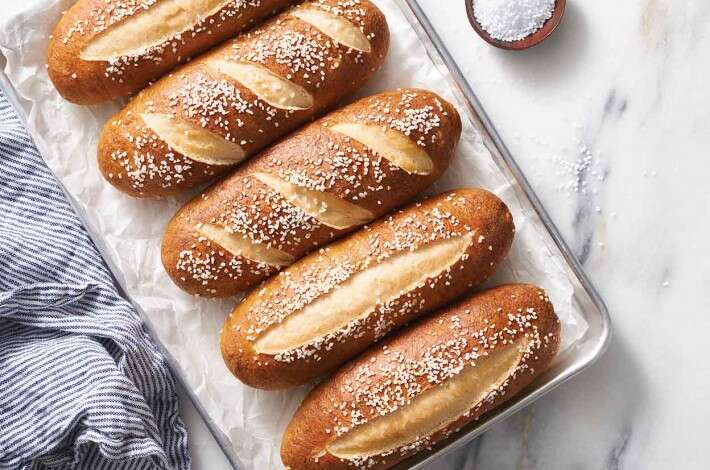

Pretzel Bread

Subway style Pretzel Sandwich Rolls
Pretzel rolls that can be made start to finish in under 1.5 hours, and are great for any type of
subway sandwich or Philly cheesesteak. The dough can also be formed into hamburger style buns, or
dinner rolls, if preferred. The dough takes 20 minutes to prepare, and 25 minutes to bake, with a
rise time of roughly 1 hour. Makes 8 sandwich rolls.
Ingredients:
Dough:
- 397 g warm water
- 28 g unsalted butter
- 540 g unbleached bread flour
- 28 g dry milk
- 2 teaspoons dry yeast
Water Bath:
- 1814 g water
- 18 g salt
- 57 g baking soda
Instructions:
- Mix and knead the dough mixture using whatever preferred method. Knead dough until smooth and
slightly sticky.
- Lightly grease a large bowl. Place the dough inside and cover with a damp cloth. Allow to rise for
1 hour. Note: the dough will roughly double in volume.
- Gently deflate the dough and transfer to a lightly greased work surface.
- Divide the dough into 8 sections and shape each section into a ball.
- Flatten each ball into 6" discs, then roll each disc into a log shape. Pinch the seams and edges
closed in order to seal the logs. Shape the logs into sandwich rolls by gently flattening them with
both hands.
- Let the rolls rest for 15 minutes.
- Preheat oven to 400 degrees Fahrenheit.
- Prepare the water bath by bringing the water, salt, and baking soda to a boil in a large pot.
- Drop as many of the rolls into the water bath as can fit without overcrowding the pot. Cook each
side for 30 seconds before removing with a slotted spoon and placing on a greased baking sheet.
- Using a knife, cut a 1/2 inch deep line across the length of each roll. Sprinkle with coarse sea
salt.
- Bake the buns for 20 to 24 minutes, or until they are a deep, dark-brown. Remove from the oven and
let cool.
Home